邦妮 · 毒苹果
与芬妮同期毕业于中城大学法学系，同样有博士学位。邦妮的性格非常极端，曾经干出过因为抓宿舍老鼠而差点点燃整个宿舍楼的举动。不过她思维明晰、头脑聪明，很多人称呼她为“毒苹果”。与芬妮在联合城齐名的大侦探，但是两人性格很合不来。
指定一个敌方角色施加调查目标（被击倒时，触发【秘密调查】）与2层标记（受到伤害+1）。 拥有调查目标（被击倒时，触发【秘密调查】）的角色被击倒后，获得5星币。
PVE指定一个怪物施加调查目标（被击倒时，触发【秘密调查】，并将【秘密调）与1层标记（受到伤害+1），并获得目标标记层数*2的星币。
将 【隐匿调查】 置入地图事件池。 攻击拥有标记（受到伤害+1）的角色时，攻击力+3。击倒拥有标记（受到伤害+1）的角色时，获得1张战斗牌。
PVE将 【隐匿调查】 置入地图事件池。 攻击拥有标记（受到伤害+1）的怪物时，攻击力+3。击倒拥有标记（受到伤害+1）的怪物时，获得1张战斗牌。
基础资料
PVE 特性
- 达到1星时攻击力+1
- 初始星币+6
- 达到3星时攻击力+1、防御力+1、移动速度+1
默认
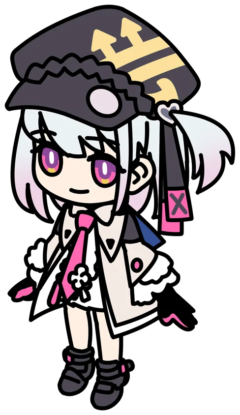
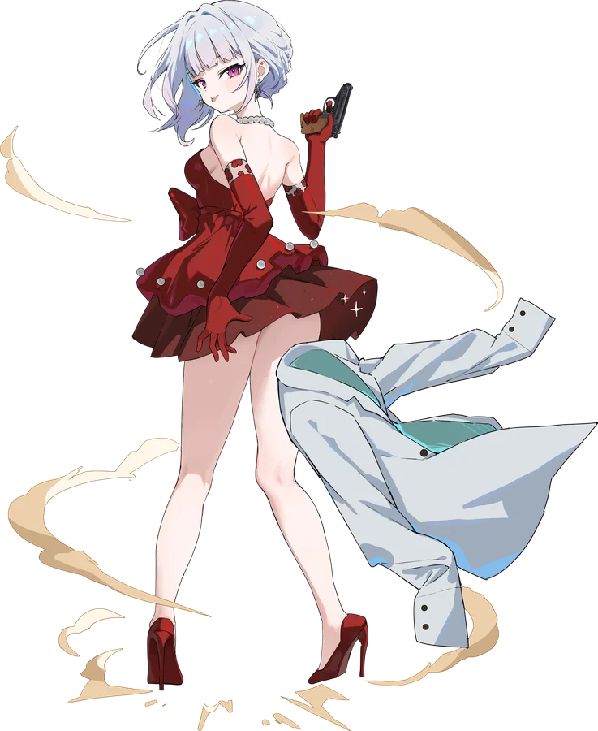
羁绊皮肤
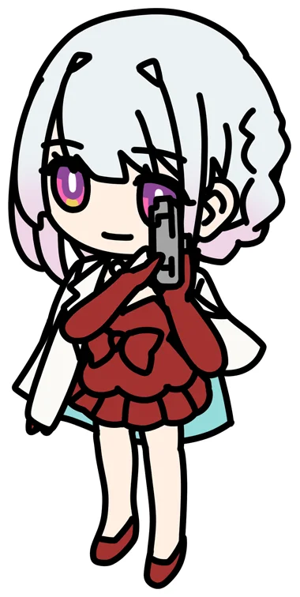
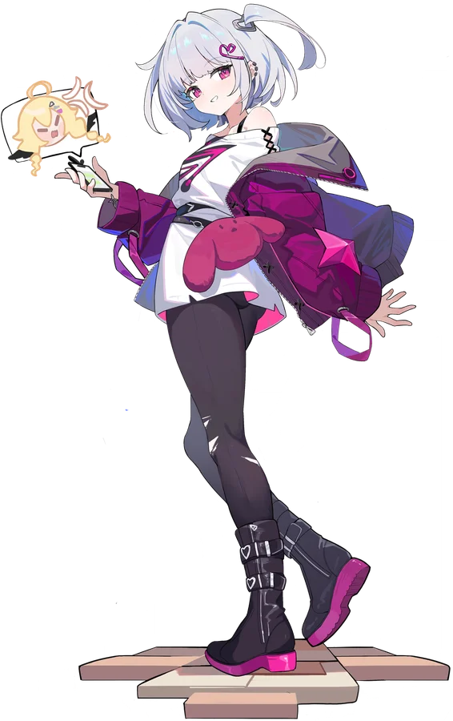
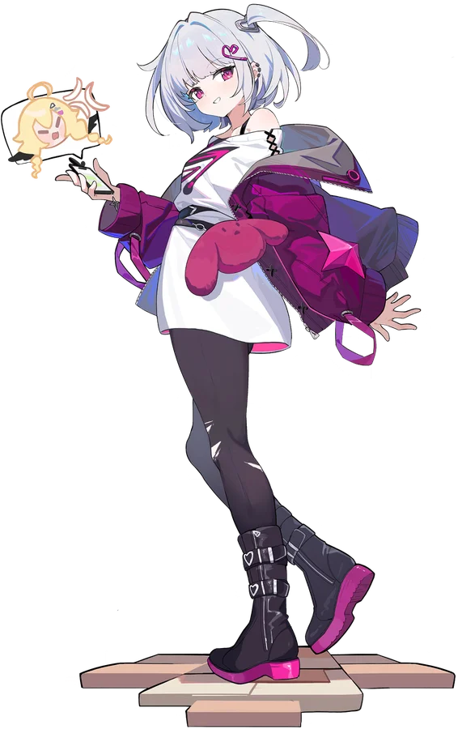
紧急邀约
“侦探大人好慢啊，难得我这有电影票让你出来看电影并且请你吃饭。”邦妮对着电话那头的人发起了牢骚，语气听起来更像是调侃。 “你这人真是的！哪有突然叫人到电影院！我告诉你，今天你要不给我合理的解释，我和你没完！”电话里传来了芬妮的声音，邦妮把电话拿远，听那头的芬妮嚎叫着。 “叫你看电影吃饭而已，用得着解释这么多吗？” “你没理由会叫我吃饭看电影？我才不信咧！”芬妮还是不太相信，依然不依不饶。 “那刚好我就有空，你也知道的嘛，我也没什么其他的朋友，损友和仇人倒是不少。” “我才不是你朋友呢！快说什么事情！”芬妮暴躁的声音越来越大。 “等你来了我再告诉你，啊不对，等你陪我看完电影吃完饭再告诉你。”邦妮怪怪地笑了一下。 “我不管！你快点先告诉我！” “那就在电影院门口等你咯？” “啊？喂！快告诉……嘟嘟嘟……” “笨蛋吗？哪里那么多理由啊，嘿嘿。”邦妮一边自言自语，一边挂断了电话。
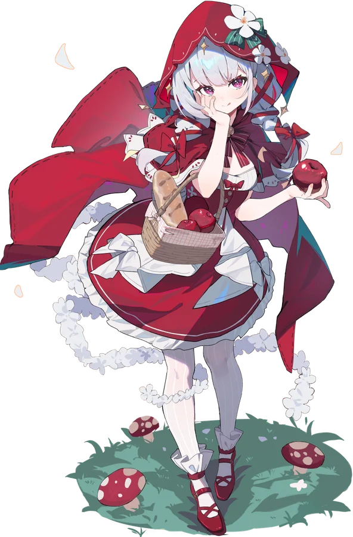
小红帽
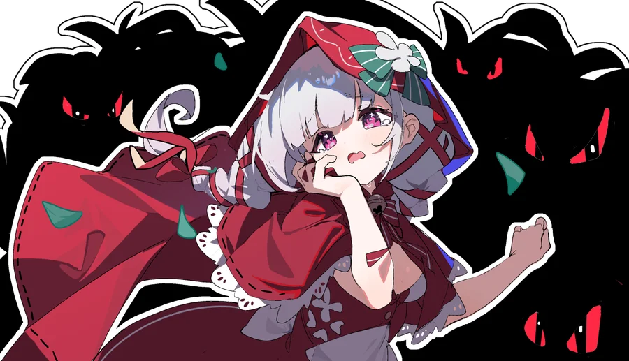
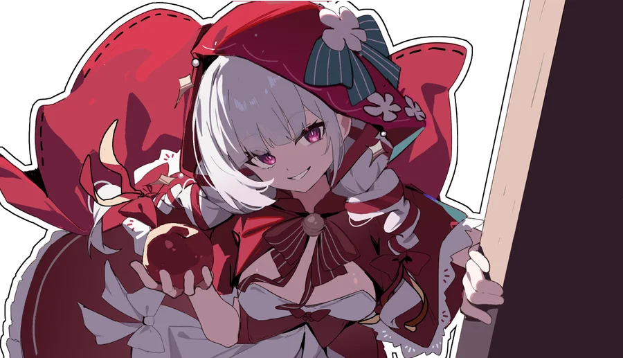
“要我说，小红帽就应该果断出击！” “啊？你到底会不会讲故事啊？”芬妮拿着绘本，惊讶地看着对着小孩子们大放厥词的邦妮。 “来，我告诉你，其实小红帽根本不是去看外婆的。她就是去杀死大灰狼的！” “哦哦哦？！” “她篮子里装的苹果，其实都是炸弹！” “哦哦哦哦哦！”小朋友们都兴奋地喊了起来，芬妮已经不知道该吐槽什么了。 “她这身打扮，其实是为了伪装，把自己变得人畜无害，好让大灰狼放松警惕！然后再用苹果炸弹，毁掉整个森林！” “嗯？姐姐不是说去打大灰狼吗？”一个小姑娘突然歪着头问道。 “对啊！你想啊，万一森林里还有别的怪物怎么办？干脆把森林都烧掉！这样就能一锅端了！” “不对！还有会飞的东西如果要逃跑了，就得……唔唔唔唔。” “好了好了，今天的绘本时间到此结束，自由活动吧~” 芬妮捂住邦妮的嘴，把她拖离了孩子们的包围。 再让她这样说下去，地球就完了。
共 15 个表情，点击可放大。
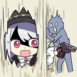
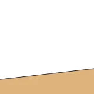
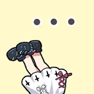
官方 wiki 没有这角色的 /获取 页，头像、名片、卡牌、骰子的完整清单暂缺；下方「档案」里保留了画廊中的零散素材。
人物传记
正在调查芬妮失踪的整个事件。
皮肤故事
紧急邀约
“侦探大人好慢啊，难得我这有电影票让你出来看电影并且请你吃饭。”邦妮对着电话那头的人发起了牢骚，语气听起来更像是调侃。 “你这人真是的！哪有突然叫人到电影院！我告诉你，今天你要不给我合理的解释，我和你没完！”电话里传来了芬妮的声音，邦妮把电话拿远，听那头的芬妮嚎叫着。 “叫你看电影吃饭而已，用得着解释这么多吗？” “你没理由会叫我吃饭看电影？我才不信咧！”芬妮还是不太相信，依然不依不饶。 “那刚好我就有空，你也知道的嘛，我也没什么其他的朋友，损友和仇人倒是不少。” “我才不是你朋友呢！快说什么事情！”芬妮暴躁的声音越来越大。 “等你来了我再告诉你，啊不对，等你陪我看完电影吃完饭再告诉你。”邦妮怪怪地笑了一下。 “我不管！你快点先告诉我！” “那就在电影院门口等你咯？” “啊？喂！快告诉……嘟嘟嘟……” “笨蛋吗？哪里那么多理由啊，嘿嘿。”邦妮一边自言自语，一边挂断了电话。
小红帽
“要我说，小红帽就应该果断出击！” “啊？你到底会不会讲故事啊？”芬妮拿着绘本，惊讶地看着对着小孩子们大放厥词的邦妮。 “来，我告诉你，其实小红帽根本不是去看外婆的。她就是去杀死大灰狼的！” “哦哦哦？！” “她篮子里装的苹果，其实都是炸弹！” “哦哦哦哦哦！”小朋友们都兴奋地喊了起来，芬妮已经不知道该吐槽什么了。 “她这身打扮，其实是为了伪装，把自己变得人畜无害，好让大灰狼放松警惕！然后再用苹果炸弹，毁掉整个森林！” “嗯？姐姐不是说去打大灰狼吗？”一个小姑娘突然歪着头问道。 “对啊！你想啊，万一森林里还有别的怪物怎么办？干脆把森林都烧掉！这样就能一锅端了！” “不对！还有会飞的东西如果要逃跑了，就得……唔唔唔唔。” “好了好了，今天的绘本时间到此结束，自由活动吧~” 芬妮捂住邦妮的嘴，把她拖离了孩子们的包围。 再让她这样说下去，地球就完了。
画廊其他素材


本地未收录该角色的语音台词。